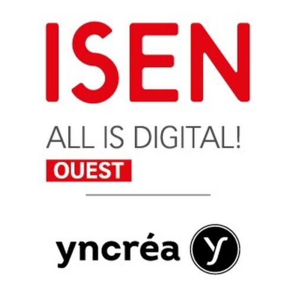
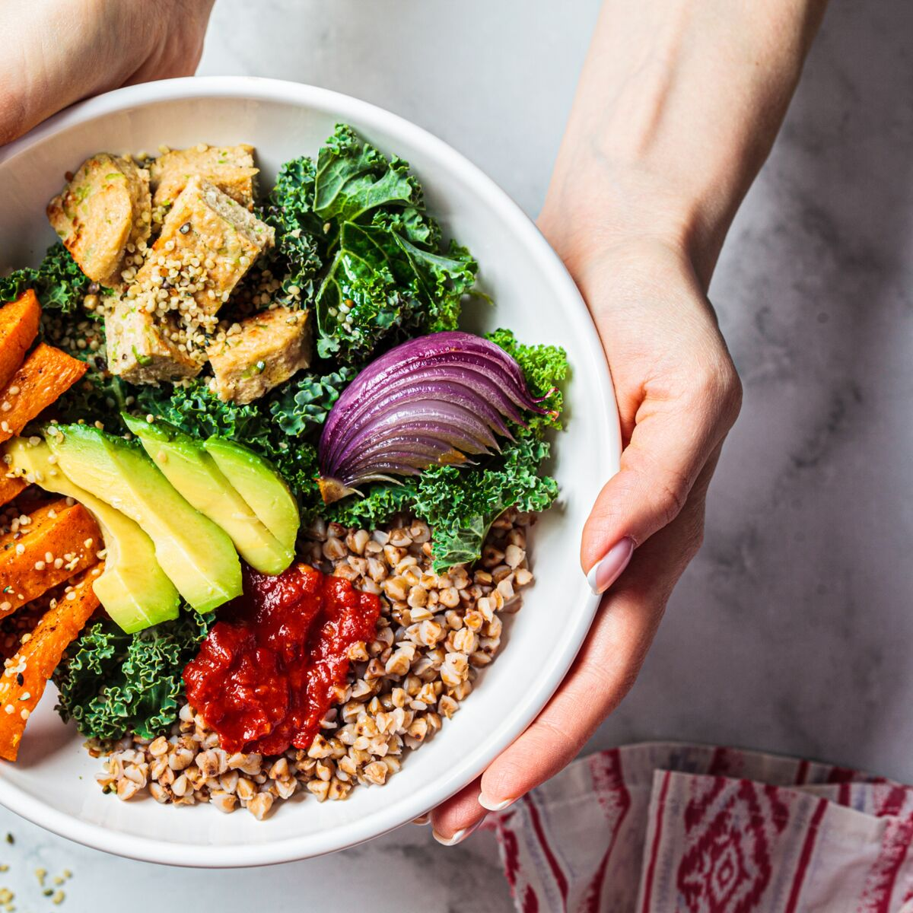
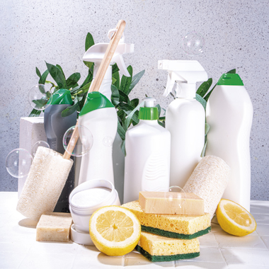
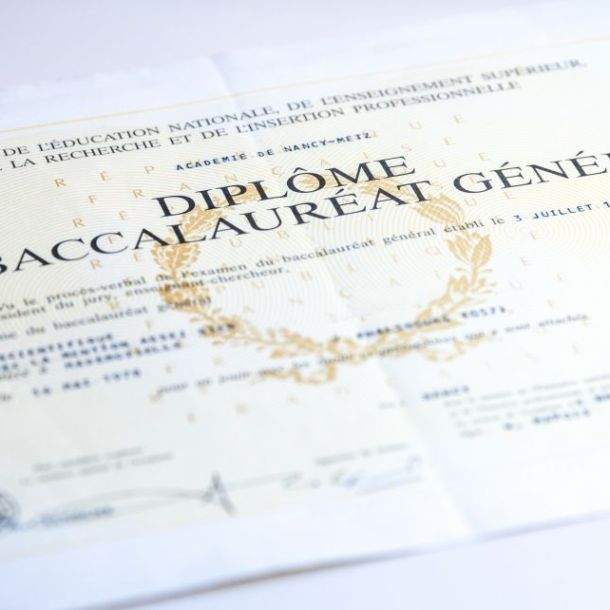

A propos
de moi
-
Comprendre
mon
parcours ! -

2025-2026
Deuxième année à l'ISEN Rennes
Je suis actuellement en deuxième année de préparatoire intégrée à l'ISEN, toujours en cycle informatique et numérique. J'aimerais découvrir de nouvelles choses, de nouveaux domaines.
Responsabilités à l'ISEN Rennes
Je suis actuellement présidente du BDE (bureau des étudiants) où je met en place des activités pour veiller à la bonne intégration des étudiants, et où je gère un bureau ainsi que des démarches administratives. Je suis également responsable CVEC afin de proposer et d'effectuer des demandes de projets pour notamment aménager les nouveaux locaux de l'école. Je suis également déléguée de classe comme l'an dernier.
Job étudiant
Je travaille avec l'ADMR durant quelques vacances scolaires, et parfois le week-end.
-

Eté - 2025
Agent cadre de vie
En tant que agent cadre de vie pour la fondation "Fondation Partage Et Vie" à la MAPAD de Flamanville, je me suis occupée de personnes agées dans leur vie quotidienne, comme la préparation du petit déjeuner, les toilettes, l'habillage, la prise du repas, la mise en pyjama et aux couchers, etc.
-
2024-2025
Première année à l'ISEN Rennes
Mon choix de réorientation m'a paru évident, mon envie d'aider les autres ne passait pas seulement par le domaine de la santé mais aussi par l'ingenirie. Je suis donc entrée en première année de cycle préparatoire à l'ISEN Rennes en cycle informatique et numérique, un domaine très présent, que je ne connaissais pas et que j'ai donc voulu découvrir.
Job étudiant
Je travaille avec l'ADMR durant quelques vacances scolaires, et parfois le week-end.
-

Eté - 2024
Auxiliaire de vie
En tant que aide à domicile pour l'ADMR, j'ai aidé des personnes âgées ou en situation de handicap dans leur vie quotidienne : ménage, repas, courses, document administratif etc.
-

2023-2024
LAS Chimie
Après l'obtention du BAC, je suis partie en étude supérieur et c'est à ce moment que j'ai décidé de m'orienter dans le domaine médicale, en choisissant une Licence chimie Accès Santé à l'université de Caen. Cependant la réalité et la mentalité des études ne m'ont pas convaincue. C'est pourquoi j'ai décidé de me réorienter par la suite.
-

Eté - 2023
Agent d'entretien
En tant que agent d'entretien pour GSF en 2023, au CMN (constructions mécaniques de Normandie), j'ai travaillé pour entretenir l'usine : les vestiaires, les sanitaires, les refectoires, les salles de pauses, etc.
-

2022-2023
Obtention du BAC
J'ai étudié durant 3 ans au lycée Jean François-Millet à Cherbourg en Cotentin où j'ai décroché mon bac avec mention "bien" en 2023. J'avais pour spécialités : Physique, SVT, et options maths complémentaires. De plus, durant ma dernière année au lycée, j'ai travaillé chez des particuliers en tant que agent d'entretien,
Job étudiant
Durant mes deux dernières année au lycée, j'ai travaillé chez des particuliers, tous les mercredis après-midi afin d'entretenir leur domicile.